Предпроектный анализ

надёжные решения
в области АСУ ТП
Проектирование, программирование и внедрение систем промышленной автоматизации. Работаем в формате проектной команды с единым техническим управлением и ответственностью за результат.
Проектирование, программирование и внедрение систем промышленной автоматизации. Работаем в формате проектной команды с единым техническим управлением и ответственностью за результат.
Мы — инженерная команда, работающая в области АСУ ТП и промышленной автоматизации.
Ядро команды —
практикующий инженер-программист АСУ ТП с опытом реализации проектов «под ключ».
Под задачи проекта
мы формируем рабочую группу из специалистов смежных направлений: программирование ПЛК и SCADA, электрика, ПНР,
проектирование и сопровождение.
Мы работаем в формате проектной команды, что позволяет гибко
масштабироваться под задачи заказчика и привлекать ровно тех специалистов, которые действительно нужны для результата.
Проекты выполняются единым техническим контуром, без разрозненных подрядчиков:
— анализ задачи и техническое
решение;
— разработка ПО ПЛК и SCADA/HMI;
— интеграция с оборудованием и системами верхнего
уровня;
— пусконаладочные работы;
— сопровождение и доработка после ввода в эксплуатацию.
Ответственность
за результат и коммуникацию с заказчиком берёт на себя единый технический координатор проекта.
Мы занимаемся разработкой и внедрением решений в области АСУ ТП:
— программирование ПЛК;
— SCADA
/ HMI;
— автоматизация технологических процессов;
— модернизация существующих систем;
— техническое
сопровождение и развитие систем автоматизации.
Работаем с промышленным оборудованием и ПО ведущих
производителей, ориентируясь на надёжность, сопровождаемость и требования конкретного объекта.
Мы открыты к разным форматам работы:
— проекты «под ключ»;
— участие в проектах в роли команды
АСУ ТП;
— усиление инженерных подразделений заказчика;
— долгосрочное техническое
сопровождение.
Юридически работы выполняются по договору с индивидуальным предпринимателем, при этом проект
реализуется командой специалистов, работающих в едином техническом подходе.
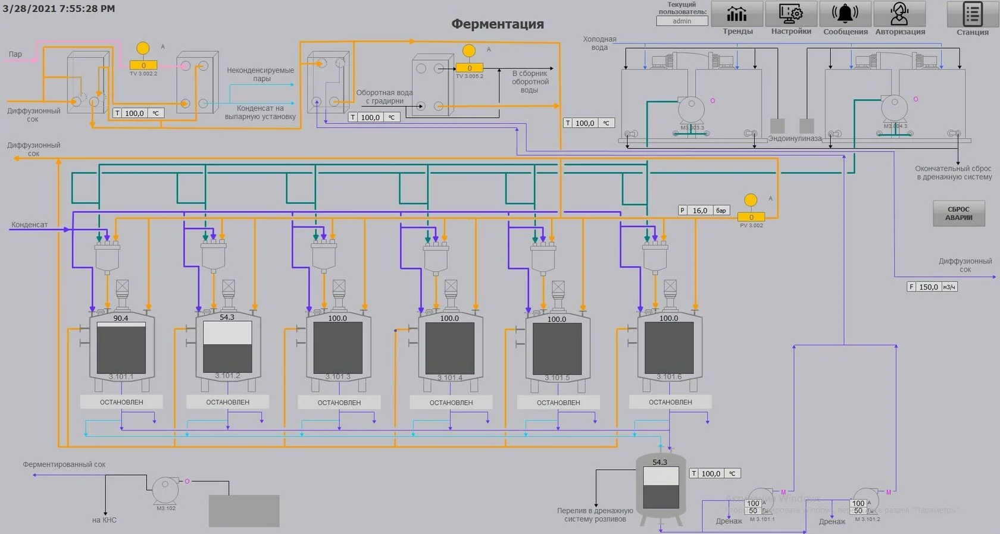
Завод по комплексной переработке топинамбура - Redundancy S7-1500, 750 IO-сигналов
г. Курск 2021г
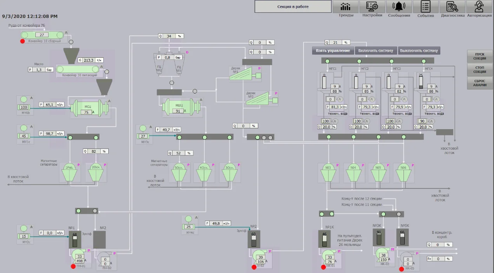
АСУ технологическим процессом секции обогащения №10 участка обогащения дробильно-обогатительной фабрики
г. Оленегорск 2020г
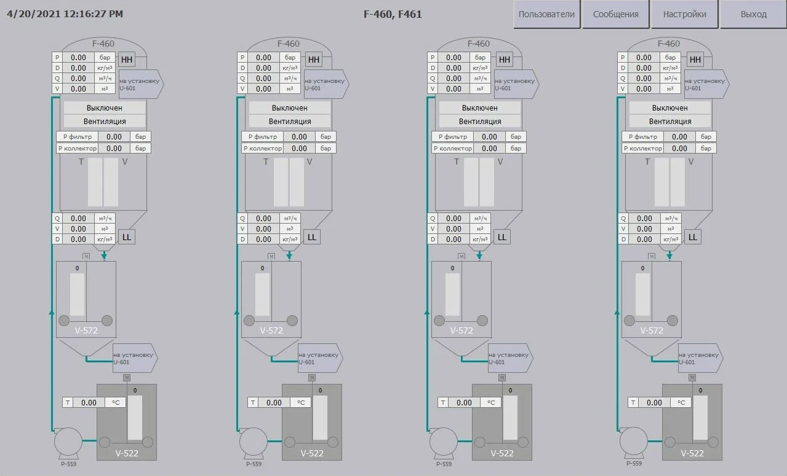
Завод по комплексной переработке топинамбура - Redundancy S7-1500, 750 IO-сигналов
г. Курск 2021г
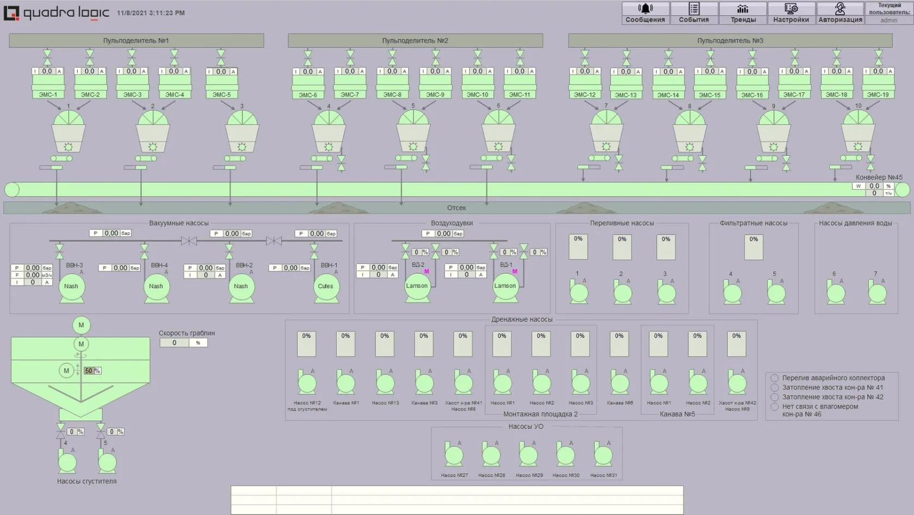
Диспетчеризация УОиПК - 1 000 настраиваемых параметров, 2 200 аварийных и предупредительных сообщений, 3 700 параметров для
отображения,
10 000 строк кода
г. Оленегорск 2021г
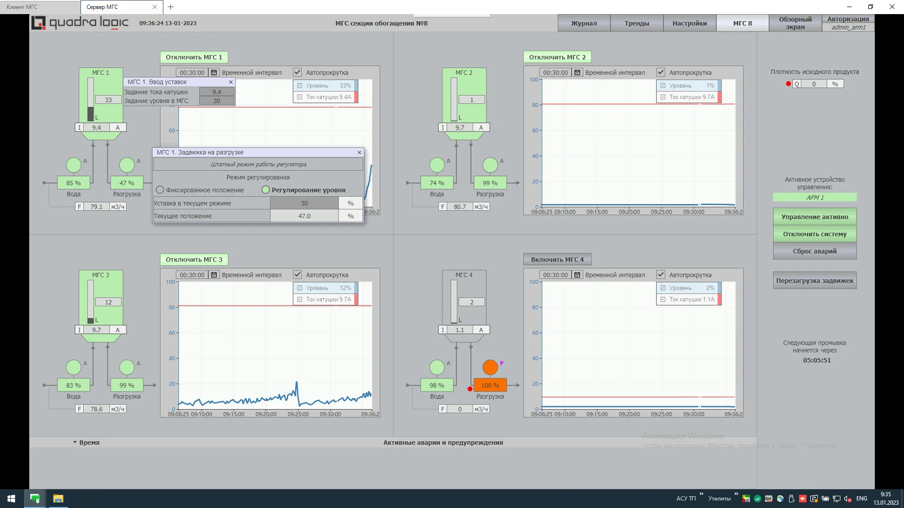
Система централизованного управления магнитно-гравитационными сепараторами
г. Оленегорск 2022г
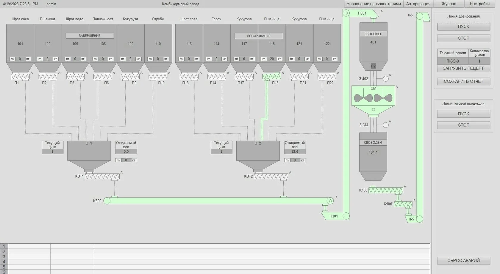
Автоматизированная система управления линией дозирования зерновых компонентов
г. Пермь 2023г
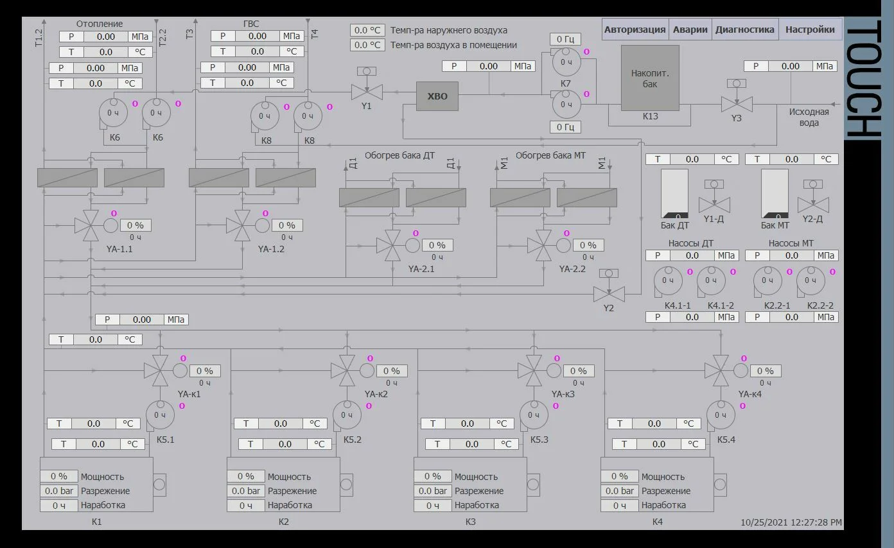
Система управления модульной дизельной котельной тепловой мощностью 5,3 МВт
Хабаровский край 2022г
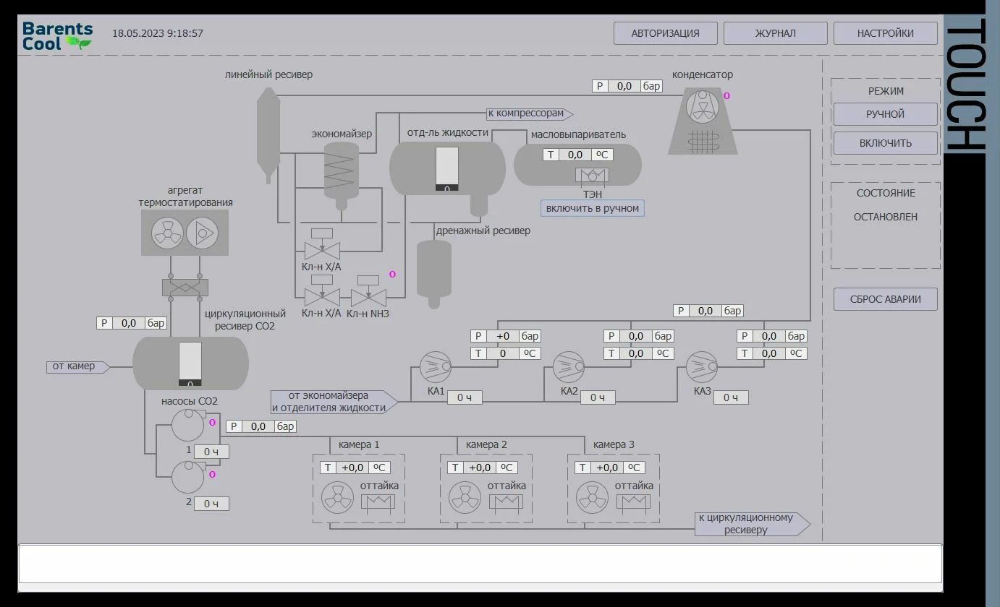
Техническое перевооружение холодильного оборудования
ООО "МурманСтрой"
г. Мурманск 2023г
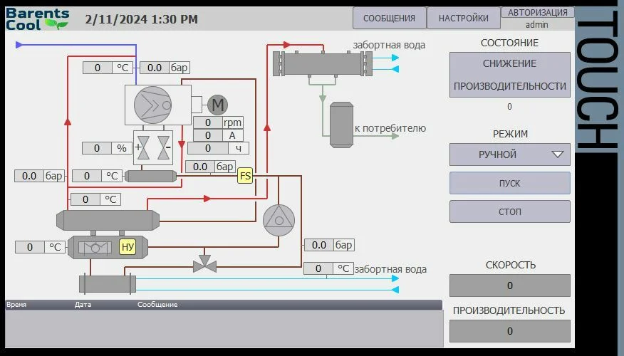
Компрессорно-конденсаторный агрегат
г. Мурманск 2024г
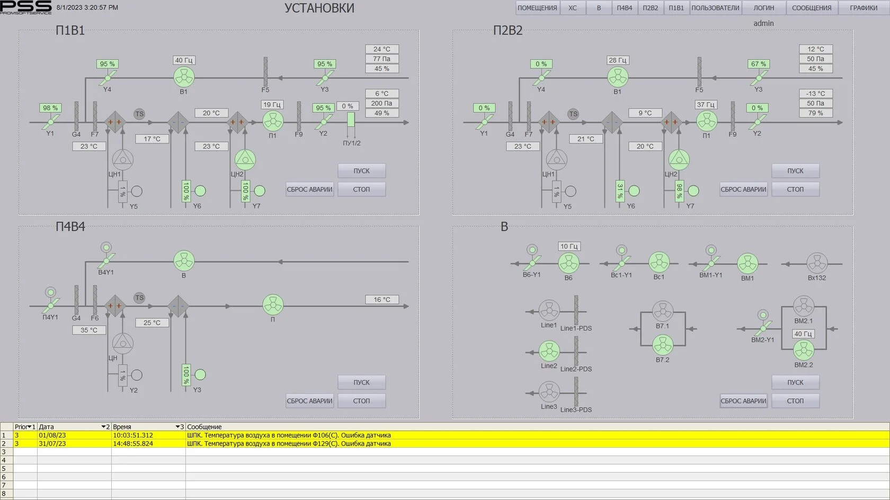
ООО «Полисинтез». Система вентиляции чистых помещений участка финишных стадий производства фармацевтических субстанций
г.
Белгород 2023г
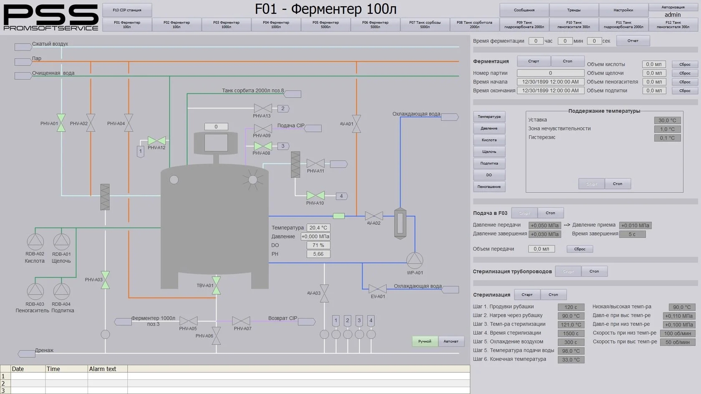
БиоТехРосва. Линия ферментации цеха производства аскорбиновой кислоты
г. Калуга 2023г
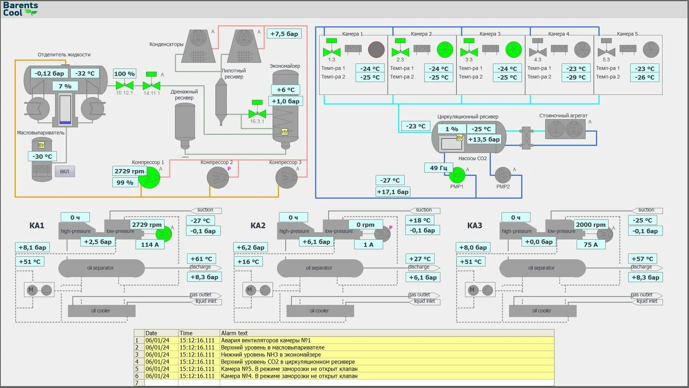
АСУ Холодильника 3000 тонн
г. Мурманск 2023г
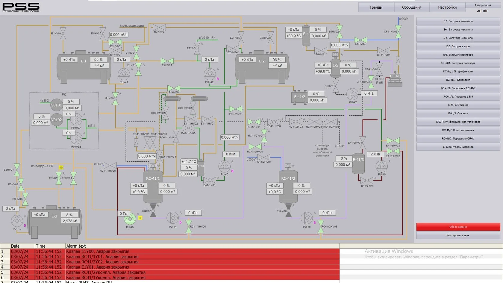
Метанольная часть
2024г., подробности не раскрываются
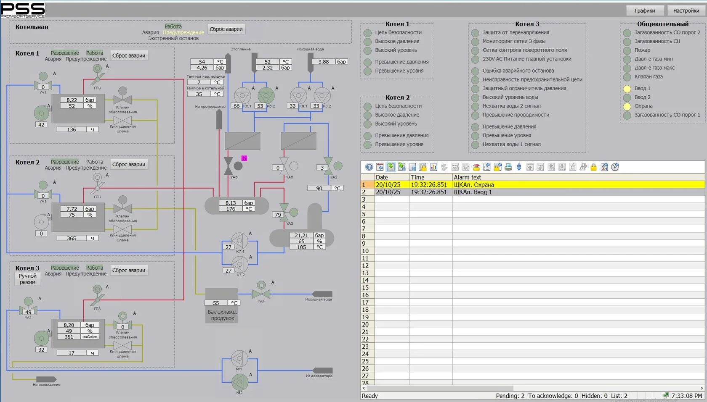
Паровая производственная котельная
2025г., ПензаМолИнвест
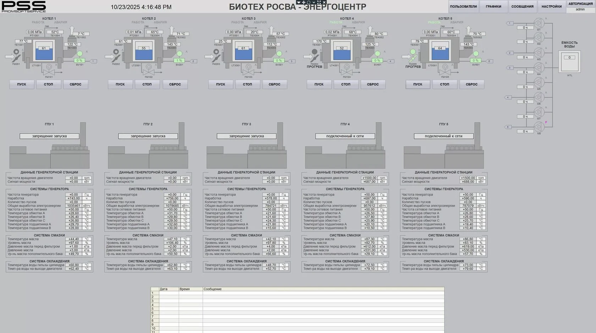
Диспетчеризация энергоцентра
2025г., БиоТехРосва
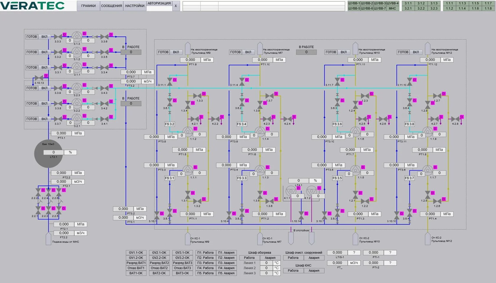
Повысительная насосная станция
2025г., Карельский Окатыш
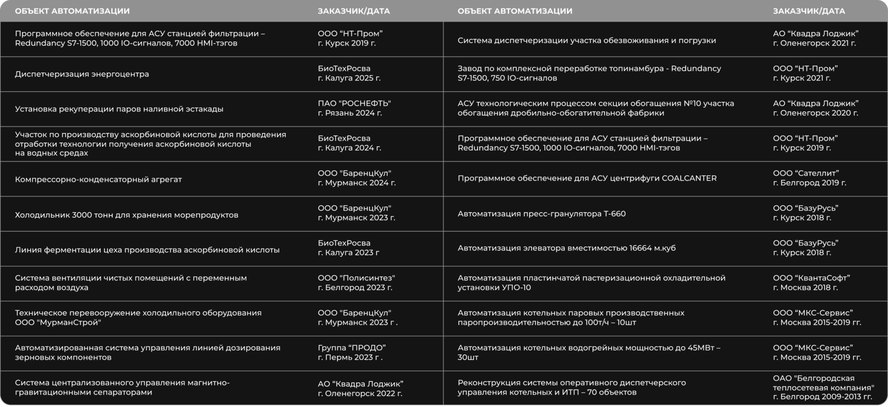
Ручное программирование себя исчерпало.
Современные проекты требуют скорости, повторяемости и управляемости.
Нейрокодинг —
это отказ от ремесла в пользу индустриального подхода.
Нейрокодинг — это автоматизированная генерация PLC и SCADA-проектов с использованием етапрограммирования и нейросетевых моделей.
Инженер
не пишет код — он задаёт правила, структуру и данные. Код создаётся системой.
• Ручной код медленный
• Ручной код нестабилен
• Ручной код не масштабируется
• Ручной код невозможно
стандартизировать на уровне компании
Каждый новый проект — это:
ошибки, копирование, расхождения, потеря контроля.
• Превращает требования и данные в готовый проект
• Генерирует тысячи строк кода автоматически
• Обеспечивает единый
стиль, логику и архитектуру
• Исключает человеческий фактор на уровне реализации
Не «помогает инженеру».
Заменяет
ручную работу полностью.
Нейросети используются для:
• анализа структуры объектов и сигналов
• проверки логики и связей
• интеллектуальной
генерации шаблонов и кода
• ускорения и контроля качества проектных решений
Это не эксперимент.
Это рабочий
инструмент.
Нейрокодинг — это:
• быстрее, чем любая команда разработчиков
• стабильнее, чем ручной код
• масштабируемо без
потери качества
АСУ ТП больше не программируют. Её генерируют.
Виртуальная пуско-наладка ещё до выезда на объект.
Мы создаем точную цифровую копию оборудования и «прогоняем» на ней готовую программу ПЛК. По сути, это симулятор технологического процесса, где мы можем имитировать любые сценарии — от штатной работы до аварийных остановок.
Классическая пуско-наладка — это всегда непредсказуемость. Ошибки всплывают в последний момент, когда время и бюджет уже на пределе. Наш подход переворачивает этот процесс. Мы проверяем логику не в цехе, а в офисе. До того, как контроллер уедет на объект.
Объект запускается быстрее. Риски ниже. Вам не нужно гадать, как поведет себя программа. Она уже отработала в виртуальной среде.
Исключение «сюрпризов» на площадке. Мы выявляем и устраняем логические ошибки еще в офисе, когда это просто и дешево.
Предсказуемые сроки. 90% логики отработано заранее. На площадке — только финальная проверка. Время пусконаладки на объекте
сокращается до 50%.
Качество «из коробки». Программа приезжает на объект уже отлаженной.
Документ для
Заказчика. По итогам виртуальной наладки формируется отчет. Это объективное подтверждение того, что каждая функция была
протестирована. Снимает лишние вопросы.
Для объективной оценки нашей разработки мы обратились к системам искусственного интеллекта — ChatGPT и DeepSeek. Экспертиза проводилась по следующим критериям: архитектура, надежность, полнота функциональности, качество метапрограммирования и эффективность цифрового двойника.
Многоразовые, промышленно-апробированные функциональные блоки (CEngine, CValve, CSensor, CPID, CCascade)
Глубокая обработка
ошибок, фильтрация сигналов, иерархия режимов управления
Модульная архитектура, позволяющая собирать сложные системы из простых
кирпичиков
Полноценный симулятор объекта с OPC UA-связью с ПЛК
Физически достоверные модели оборудования (двигатели с разгоном/выбегом,
датчики)
Возможность внесения неисправностей и сценарного тестирования
Замыкает цикл «Разработка → Тестирование → Ввод в
эксплуатацию"
Превращение Excel-таблиц в предметно-ориентированный язык (DSL) для описания технологических объектов
Единый источник правды:
IO-списки, настройки, HMI-переменные — всё в таблицах
Автоматическая генерация тысяч строк безошибочного, стандартизированного
кода
• Скорость разработки — новый двигатель или датчик добавляется строкой в Excel, а не написанием кода
• Качество — исключение
человеческих ошибок при копировании типовых решений
• Надежность — все компоненты многократно проверены и
отлажены
• Безопасность ввода в эксплуатацию — полная виртуальная наладка до подключения реального оборудования
•
Масштабируемость — система легко расширяется на новые типы оборудования и проекты
Создана не просто программа для ПЛК, а законченная инженерная платформа, поднимающая уровень автоматизации на ступень выше — от
программирования к системному проектированию.
10 баллов из 10 — это не просто оценка, это признание того, что система
готова к использованию в самых ответственных промышленных проектах и задает новый стандарт качества в своей области.
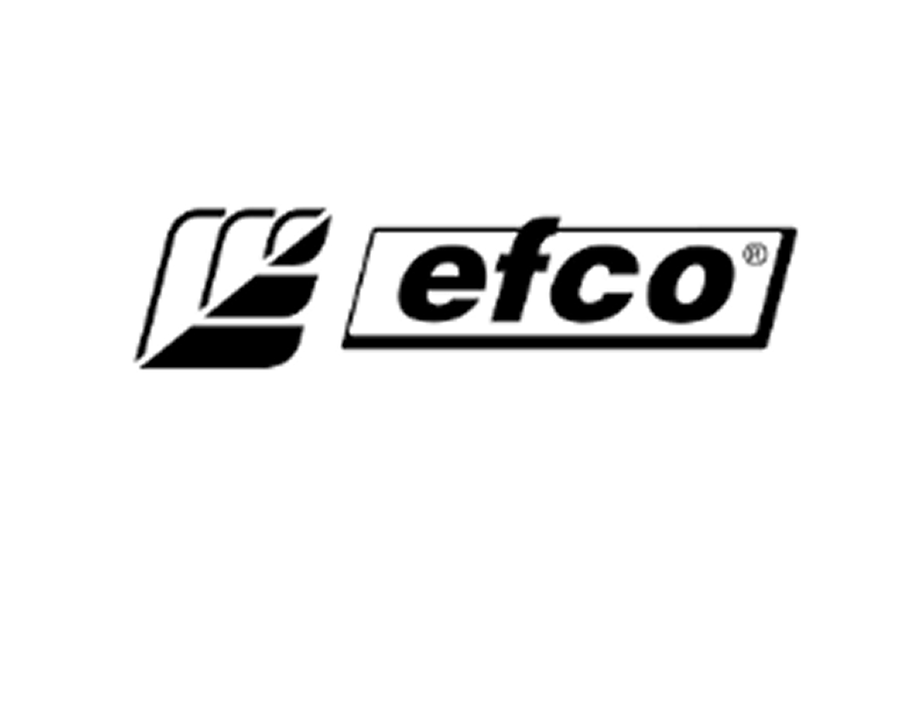
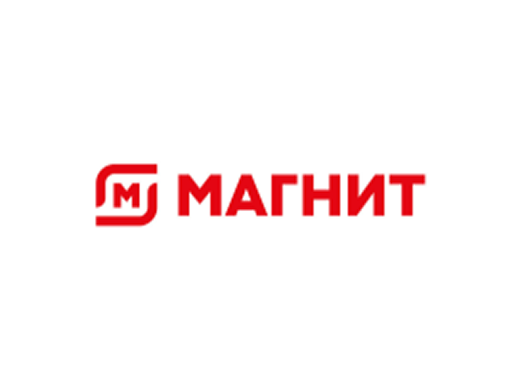
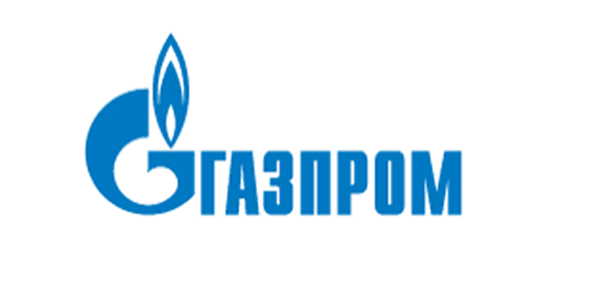
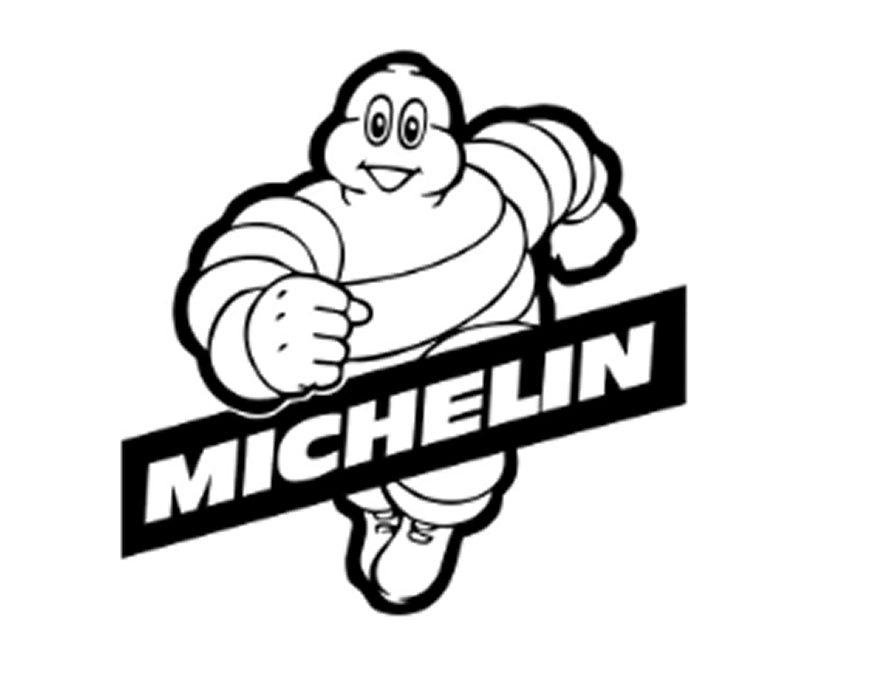
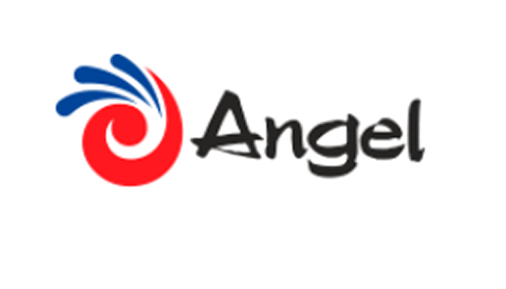
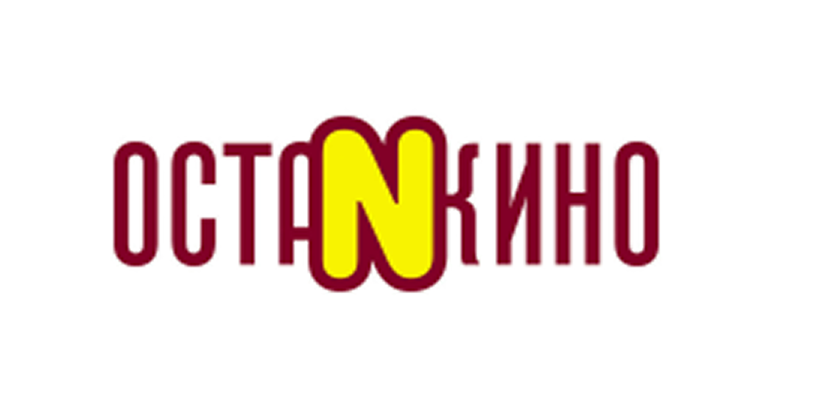
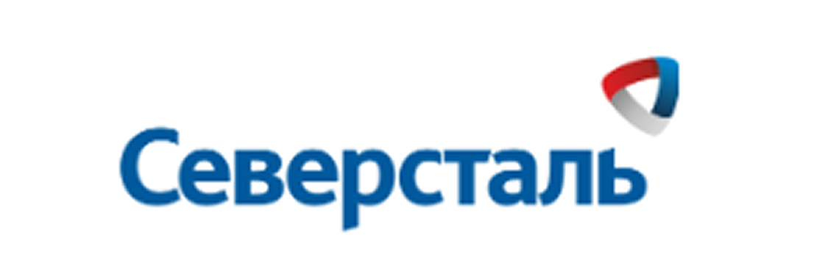
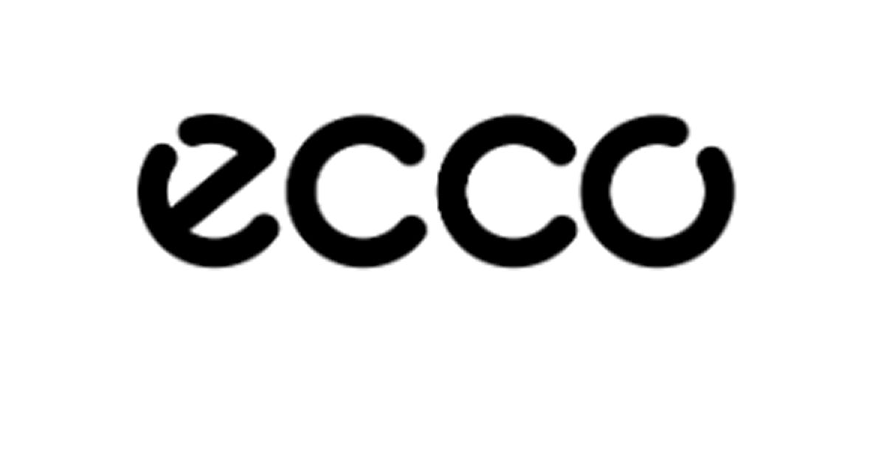
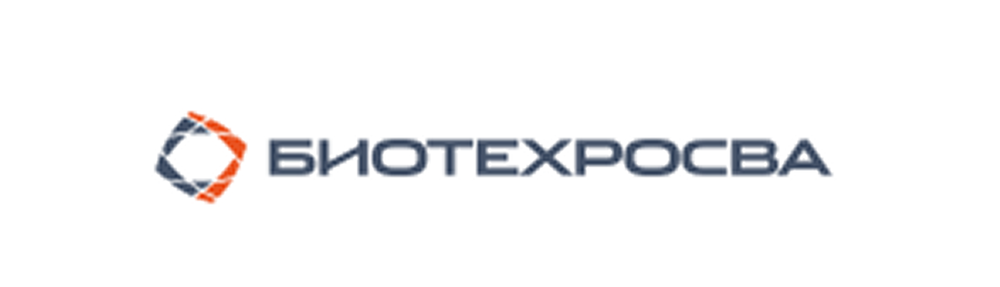
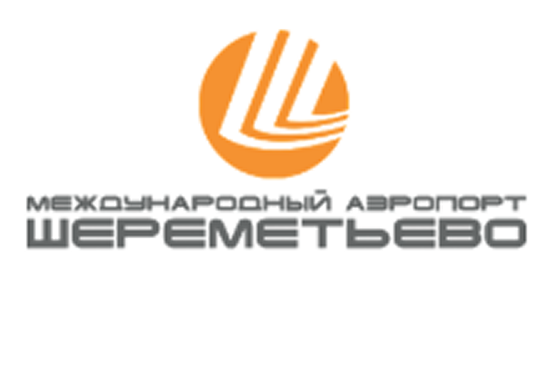
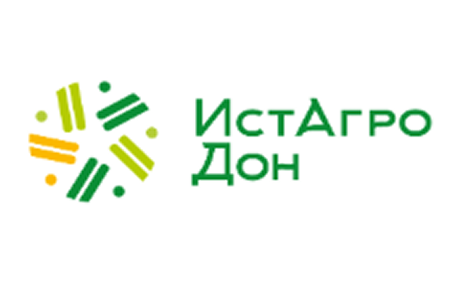
Индивидуальный предприниматель Горбунов Алексей Сергеевич
Свидетельство о государственной регистрации №435859643 от
01.03.2018 г., выданное инспекцией Федеральной налоговой службы по г. Белгороду
Паспорт № 5405 934821 выдан
10.05.2006 г. Железнодорожным РОВД г. Орла
ОГРНИП 318312300016081 от 01.03.2018 г.
ИНН 575106877945
308501, Белгородская обл., п. Дубовое, мкр.
Северный-3,
ул. Бульварная, д. 8, кв. 17
Р/сч 40802810001500114983
ООО "Банк Точка"
БИК 044525104
К/сч банка 30101810745374525104
e-mail a.gorbunov@bk.ru
тел.: +7(961)175-10 03